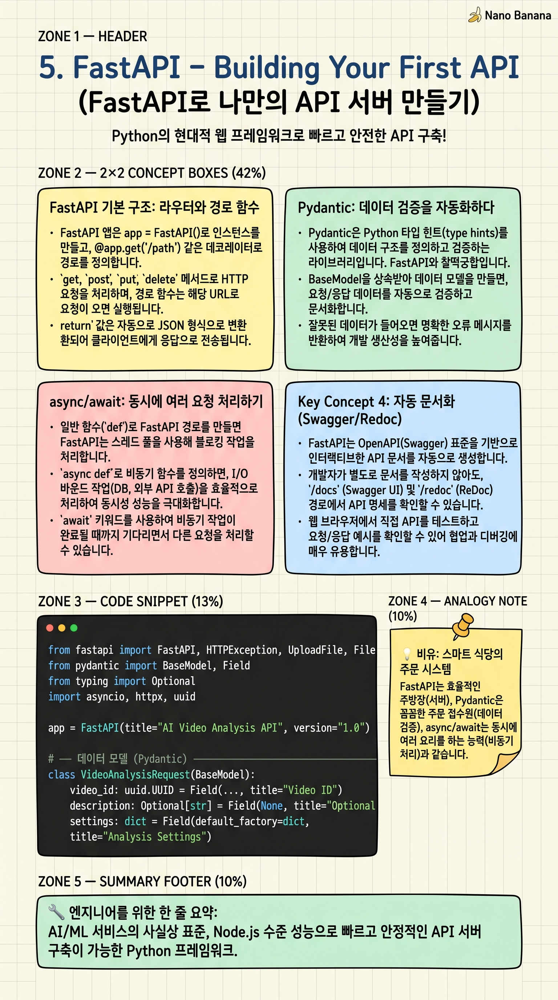

FastAPI – Building Your First API

🎯 학습 목표
- FastAPI로 GET/POST 엔드포인트를 직접 만들 수 있다
- Pydantic 모델로 요청 데이터를 검증하는 방법을 이해한다
- async/await가 왜 FastAPI에서 중요한지 설명할 수 있다
- 자동 생성되는 Swagger UI 문서를 활용할 수 있다
FastAPI는 Python으로 API를 만드는 현대적 프레임워크입니다. 이름처럼 개발 속도와 실행 속도 모두 빠릅니다. Node.js, Go와 비슷한 성능을 내면서 Python의 간결한 문법을 사용합니다.
챕터 1의 시스템 다이어그램에서 보았던 'Main FastAPI (포트 8000)'가 바로 이 프레임워크로 만들어진 서버입니다. 비디오를 받아 ffmpeg로 프레임을 추출하고, 3개 워커에게 동시에 요청을 보내는 중앙 서버 역할을 합니다.
FastAPI를 선택하는 이유: 코드 자체가 문서가 되는 자동 Swagger UI, Python 타입 힌트로 자동 데이터 검증, async/await로 동시에 수천 요청 처리 가능, 전 세계 AI 서비스의 사실상 표준 프레임워크.
핵심 내용
FastAPI 기본 구조: 라우터와 경로 함수
FastAPI 앱은 app = FastAPI()로 인스턴스를 만들고, @app.get('/path') 같은 데코레이터로 URL과 함수를 연결합니다. 이 연결된 함수를 '경로 함수(path function)' 또는 '뷰(view)'라고 합니다.
URL에서 값을 추출하는 두 가지 방법이 있습니다. 경로 파라미터는 /users/{user_id}처럼 URL에 직접 포함됩니다. 쿼리 파라미터는 /users?age=20처럼 ?뒤에 붙습니다. FastAPI는 함수의 타입 힌트를 보고 자동으로 이 두 가지를 구분합니다.
함수가 딕셔너리나 Pydantic 모델을 반환하면 FastAPI가 자동으로 JSON으로 변환합니다. 상태 코드, 응답 헤더도 자동으로 설정합니다. 번거로운 직렬화 코드가 필요 없습니다.
Pydantic: 데이터 검증을 자동화하다
Pydantic은 Python 타입 힌트로 데이터를 검증하는 라이브러리입니다. FastAPI와 찰떡궁합입니다. BaseModel을 상속받아 필드와 타입을 정의하면, FastAPI가 들어오는 요청 Body를 자동으로 검증합니다.
예를 들어 class VideoRequest(BaseModel): title: str; duration: int 로 정의하면, 클라이언트가 title에 숫자를 보내거나 duration을 문자열로 보내면 자동으로 422 Unprocessable Entity 에러를 반환합니다. 검증 코드를 직접 작성할 필요가 없습니다.
필드에 기본값, 최솟값, 최댓값, 정규식 등의 제약을 추가할 수 있습니다. Field(default=None, min_length=1, max_length=100)처럼요. 이 모든 제약이 자동 생성 Swagger 문서에도 반영됩니다.
async/await: 동시에 여러 요청 처리하기
일반 함수(def)로 FastAPI 경로를 만들면 FastAPI는 스레드 풀을 사용해 블로킹 작업을 처리합니다. async def로 만들면 이벤트 루프에서 비동기로 처리합니다.
비동기의 핵심 장점: 데이터베이스 쿼리나 외부 API 호출처럼 '기다리는 시간'이 있는 작업에서, 기다리는 동안 다른 요청을 처리할 수 있습니다. 식당으로 비유하면, 음식을 만드는 동안 다른 손님 주문을 받을 수 있는 것입니다.
챕터 1 다이어그램에서 '3개 동시 httpx 요청'이 바로 이 async/await 덕분입니다. async with httpx.AsyncClient() 를 사용하면 3개 워커 요청을 동시에 보내고 모두 완료되길 기다립니다. 순차적으로 보내면 3배 시간이 걸리지만 동시에 보내면 가장 느린 워커의 응답 시간만큼만 기다리면 됩니다.
💡 비유로 이해하기
FastAPI는 매우 스마트한 식당 주문 시스템입니다. 메뉴판(API 문서)이 자동으로 만들어지고, 고객이 잘못된 주문을 하면(타입 오류) 자동으로 '그런 메뉴는 없습니다'라고 안내합니다(Pydantic 검증).
비동기(async) 처리는 멀티태스킹 웨이터와 같습니다. 손님 A가 주문한 음식을 주방에 넘기고 조리를 '기다리는 동안', 웨이터는 다른 손님 B, C의 주문을 받습니다. 동기 처리는 손님 A 음식이 나올 때까지 카운터에 서서 기다리는 웨이터와 같습니다. 어느 식당이 더 많은 손님을 받을 수 있을까요?
@app.get('/menu') 데코레이터는 식당 문 앞에 '이 문으로 들어오면 메뉴 보여드립니다'라고 안내판을 붙이는 것과 같습니다. URL 경로를 함수와 연결하는 선언적 방식입니다.
💻 코드 예시
비디오 분석 서비스의 API를 FastAPI로 구현합니다. 파일 업로드, 분석 상태 조회, 결과 반환까지 실제 시스템에 가까운 코드를 작성합니다. (pip install fastapi uvicorn python-multipart httpx)
from fastapi import FastAPI, HTTPException, UploadFile, File
from pydantic import BaseModel, Field
from typing import Optional
import asyncio, httpx, uuid
app = FastAPI(title="AI Video Analysis API", version="1.0")
# ── 데이터 모델 (Pydantic) ──────────────────────────────────
class AnalysisRequest(BaseModel):
prompt: str = Field(..., min_length=1, max_length=500,
description="AI에게 보낼 질문")
language: str = Field(default="ko", pattern="^(ko|en)$")
class AnalysisResult(BaseModel):
job_id: str
status: str # "processing" | "done" | "error"
answer: Optional[str] = None
# 간단한 인메모리 저장소 (실제론 Redis/DB 사용)
jobs: dict[str, AnalysisResult] = {}
# ── 엔드포인트 ──────────────────────────────────────────────
@app.post("/analyze", response_model=AnalysisResult, status_code=202)
async def start_analysis(request: AnalysisRequest,
video: UploadFile = File(...)):
"""비디오를 업로드하고 AI 분석을 시작합니다."""
job_id = str(uuid.uuid4())
jobs[job_id] = AnalysisResult(job_id=job_id, status="processing")
# 3개 워커에 동시 요청 (챕터 1 다이어그램의 패턴)
asyncio.create_task(_run_workers(job_id, request.prompt))
return jobs[job_id]
@app.get("/analyze/{job_id}", response_model=AnalysisResult)
async def get_result(job_id: str):
"""분석 결과를 조회합니다."""
if job_id not in jobs:
raise HTTPException(status_code=404, detail="Job not found")
return jobs[job_id]
async def _run_workers(job_id: str, prompt: str):
"""3개 워커에 동시 요청을 보내는 내부 함수."""
worker_urls = [
"http://worker-a:8001/infer", # Qwen 27B
"http://worker-b:8002/infer", # Qwen 9B
"http://worker-c:8003/infer", # Qwen 4B
]
async with httpx.AsyncClient(timeout=60) as client:
# asyncio.gather = 3개 요청 동시 발사
tasks = [client.post(url, json={"prompt": prompt}) for url in worker_urls]
results = await asyncio.gather(*tasks, return_exceptions=True)
answers = [r.json()["answer"] for r in results if not isinstance(r, Exception)]
jobs[job_id] = AnalysisResult(
job_id=job_id, status="done", answer=" | ".join(answers)
)
# 실행: uvicorn main:app --reload --port 8000
# 문서: http://localhost:8000/docs@app.post에 response_model=AnalysisResult를 지정하면 FastAPI가 반환 데이터를 자동으로 Pydantic 모델에 맞게 직렬화합니다. status_code=202는 '요청 수락, 아직 처리 중'을 의미합니다. asyncio.create_task()는 백그라운드에서 비동기 작업을 실행하고 즉시 응답을 반환합니다. asyncio.gather()는 여러 코루틴을 동시에 실행하는 핵심 함수입니다.
🏭 현업에서의 평가
✅ 시니어가 보는 것
- async def와 def의 차이, 언제 각각 사용해야 하는지 설명
- Pydantic 모델로 데이터 검증과 직렬화를 처리하는 패턴
- 의존성 주입(Depends)을 활용한 인증, DB 세션 관리 이해
⚠️ 레드 플래그
- async def 안에서 동기 블로킹 함수(requests, time.sleep) 직접 호출
- Pydantic 없이 request.json()을 직접 파싱하는 패턴
🎤 예상 인터뷰 질문
- FastAPI에서 async def와 def 중 언제 어느 것을 써야 하나요?
- 동시에 여러 외부 API를 호출할 때 asyncio.gather를 쓰는 이유는 무엇인가요?
✨ 핵심 요약
FastAPI = Python REST API 표준
AI/ML 서비스의 사실상 표준, Node.js 수준 성능
@app.get/post 데코레이터
URL 경로와 Python 함수를 연결하는 선언적 방식
Pydantic 자동 검증
BaseModel 상속만으로 타입 검증, JSON 직렬화/역직렬화 자동 처리
async/await의 힘
기다리는 시간 동안 다른 요청 처리 → 적은 서버로 많은 동시 접속 처리
asyncio.gather
여러 비동기 작업 동시 실행 → 3개 워커에 동시 요청 발사의 핵심
자동 Swagger UI
/docs 경로에서 API 문서와 테스트 인터페이스 자동 제공
202 Accepted
처리에 시간이 걸리는 작업 시작 시 사용하는 상태 코드